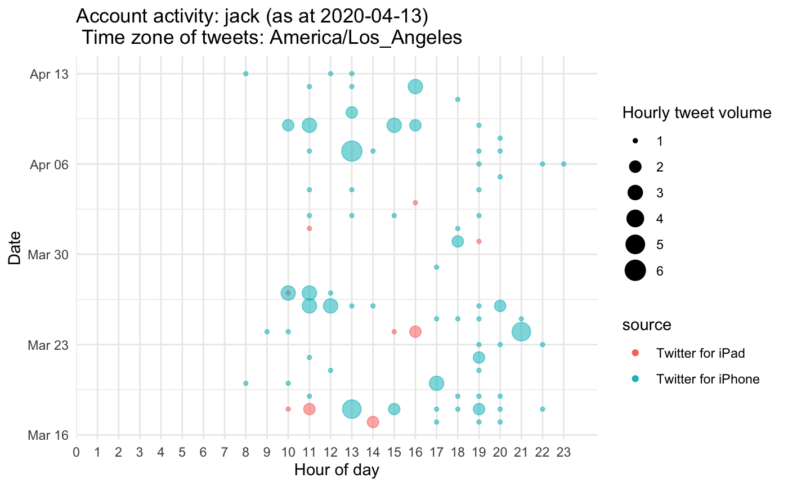

account_activity.RdThis function creates a bubble plot of account activity by hour of a single twitter screen_name (inspired by python script by twitter user "@Conspirator0")
account_activity( account_name, depth = 3200, time_zone = "Africa/Johannesburg", no_of_weeks = 4, token = NULL )
| account_name | A twitter screen_name, in quotes. |
|---|---|
| depth | The maximum depth of tweets to be visualised. Starts from most recent tweet. Twitter API maximum and default is 3200. Only those tweets occuring in the no_of_weeks param will be shown |
| time_zone | The timezone of the account. Requires timezone in format of TZ database (https://en.wikipedia.org/wiki/List_of_tz_database_time_zones) in quotes. Default is "Africa/Johannesburg" |
| no_of_weeks | The number of weeks to display. Default is 4. Plot will automatically scale to exclude any period without activity. |
| token | A twitter oauth token. Default is NULL, and will utilise an existing token loaded into environment, but can be over-ridden to use a particular token. |
account_activity("jack", depth = 3200, time_zone = "America/Los_Angeles", no_of_weeks = 4,token = NULL)#>#> ✓ ggplot2 3.3.0 ✓ purrr 0.3.3 #> ✓ tibble 3.0.0 ✓ dplyr 0.8.5 #> ✓ tidyr 1.0.2 ✓ stringr 1.4.0 #> ✓ readr 1.3.1 ✓ forcats 0.5.0#> Warning: package ‘tibble’ was built under R version 3.6.2#> Conflicts ────────────────────────────────────────────────────────────────── tidyverse_conflicts() ── #> x dplyr::filter() masks stats::filter() #> x purrr::flatten() masks rtweet::flatten() #> x dplyr::lag() masks stats::lag()#> #>#> #> #>